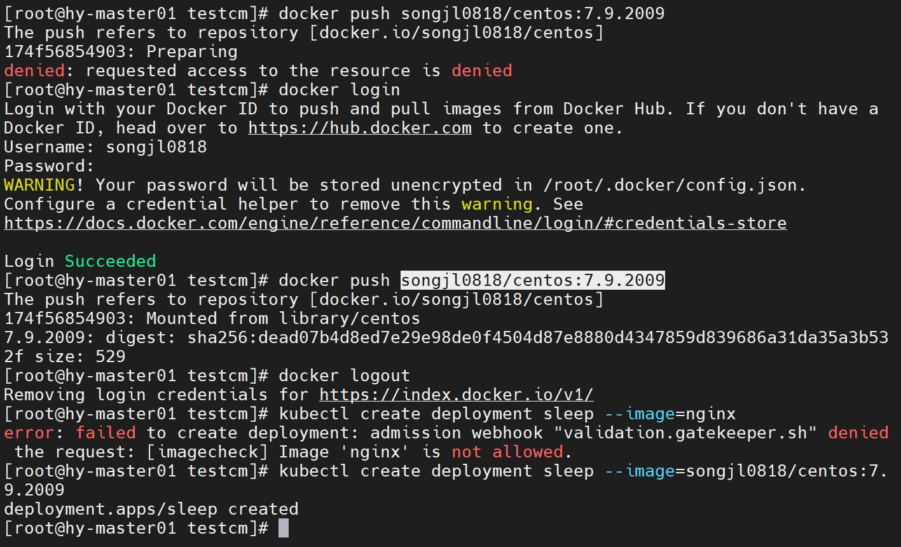

- 为了提高
Kubernetes的安全性，您需要在您的环境中控制和限制资源创建。为此，Kubernetes提供了一个称为Pod安全策略（PSP）的beta功能，该功能很快将不被使用，并被称为Pod安全（PSS）的标准所取代。 OPA Gatekeeper是Kubernetes的策略控制器。从技术上讲，这是一个可自定义的Kubernetes Admission Webhook，可帮助实施策略和加强治理。- 在之前的文章我们展示了如何通过
go来开发webhook，而通过Gatekeeper则能轻松实现策略管理，而不用经过复杂的编码。
部署
Gatekeeper的部署非常简单，去github下载包，之后用kubect部署，由于之前已经部署，所以我们dry run一下：1
2
3
4
5
6
7
8
9
10
11
12
13
14
15
16
17
18
19[root@hy-master01 deploy]# kubectl apply -f gatekeeper.yaml --dry-run
namespace/gatekeeper-system configured (dry run)
resourcequota/gatekeeper-critical-pods configured (dry run)
customresourcedefinition.apiextensions.k8s.io/configs.config.gatekeeper.sh configured (dry run)
customresourcedefinition.apiextensions.k8s.io/constraintpodstatuses.status.gatekeeper.sh configured (dry run)
customresourcedefinition.apiextensions.k8s.io/constrainttemplatepodstatuses.status.gatekeeper.sh configured (dry run)
customresourcedefinition.apiextensions.k8s.io/constrainttemplates.templates.gatekeeper.sh configured (dry run)
serviceaccount/gatekeeper-admin configured (dry run)
podsecuritypolicy.policy/gatekeeper-admin configured (dry run)
role.rbac.authorization.k8s.io/gatekeeper-manager-role configured (dry run)
clusterrole.rbac.authorization.k8s.io/gatekeeper-manager-role configured (dry run)
rolebinding.rbac.authorization.k8s.io/gatekeeper-manager-rolebinding configured (dry run)
clusterrolebinding.rbac.authorization.k8s.io/gatekeeper-manager-rolebinding configured (dry run)
secret/gatekeeper-webhook-server-cert configured (dry run)
service/gatekeeper-webhook-service configured (dry run)
deployment.apps/gatekeeper-audit configured (dry run)
deployment.apps/gatekeeper-controller-manager configured (dry run)
poddisruptionbudget.policy/gatekeeper-controller-manager configured (dry run)
validatingwebhookconfiguration.admissionregistration.k8s.io/gatekeeper-validating-webhook-configuration configured (dry run)查看一下部署情况：
1
2
3
4
5
6[root@hy-master01 deploy]# kubectl get pod -n gatekeeper-system
NAME READY STATUS RESTARTS AGE
gatekeeper-audit-86c7579788-5qkk9 1/1 Running 0 40d
gatekeeper-controller-manager-58c66ffc85-cdtnc 1/1 Running 0 40d
gatekeeper-controller-manager-58c66ffc85-crp5p 1/1 Running 0 40d
gatekeeper-controller-manager-58c66ffc85-sds72 1/1 Running 0 40d
用一个策略做一下测试
创建一个只允许特定前缀的镜像部署，采用声明式策略语言
Rego，使用的话要学习一下，官方仓库也维护了一个策略库：1
2
3
4
5
6
7
8
9
10
11
12
13
14
15
16
17
18
19
20
21
22
23
24
25
26
27
28
29
30
31
32
33
34
35
36
37
38
39
40
41
42
apiVersion: templates.gatekeeper.sh/v1beta1
kind: ConstraintTemplate
metadata:
name: imagecheck
spec:
crd:
spec:
names:
kind: imagecheck
validation:
openAPIV3Schema:
properties:
prefix:
type: string
targets:
- target: admission.k8s.gatekeeper.sh
rego: |
package image
violation[{"msg": msg}] {
containers = input.review.object.spec.template.spec.containers
some i
image := containers[i].image
not startswith(image, input.parameters.prefix)
msg := sprintf("Image '%v' is not allowed.", [image])
}
apiVersion: constraints.gatekeeper.sh/v1beta1
kind: imagecheck
metadata:
name: imagecheck
spec:
match:
kinds:
- apiGroups: ["apps"]
kinds:
- "Deployment"
- "DaemonSet"
- "StatefulSet"
parameters:
prefix: "songjl0818/"测试是否生效,，如下所示，
nginx不被允许，以songjl0818仓库作为前缀的镜像则能够创建：